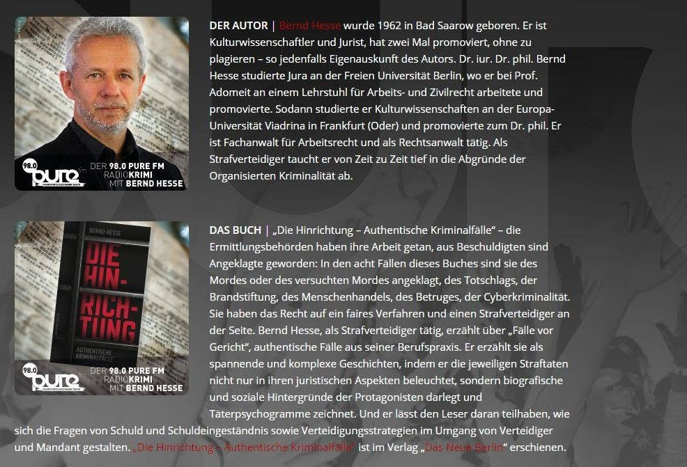
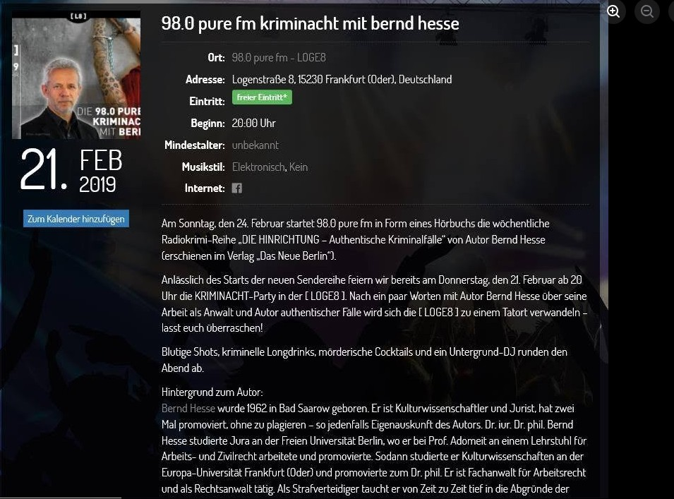
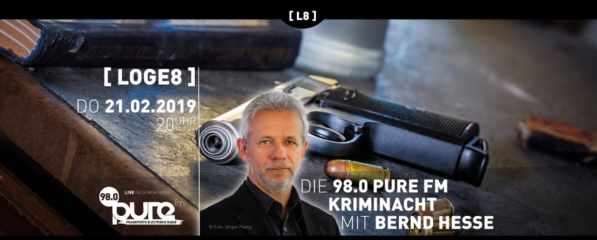
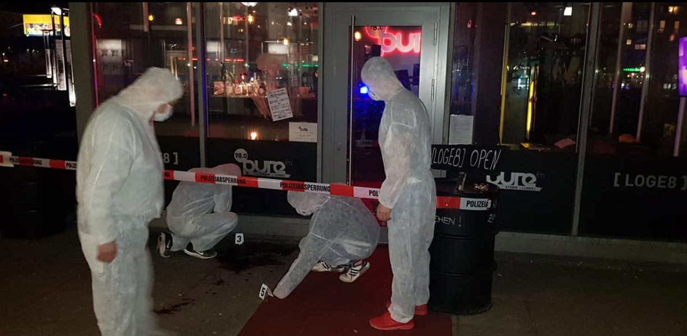
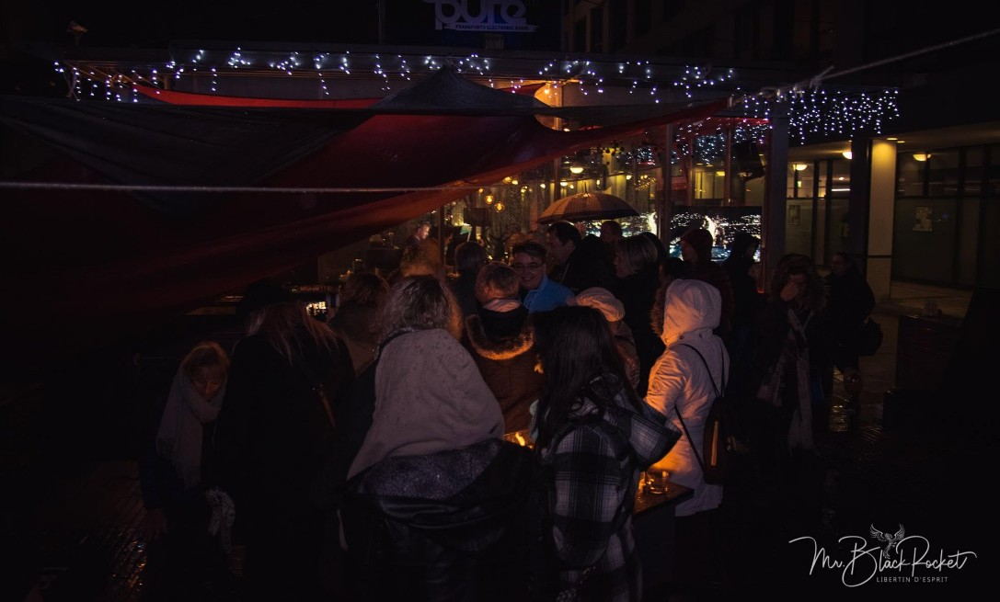
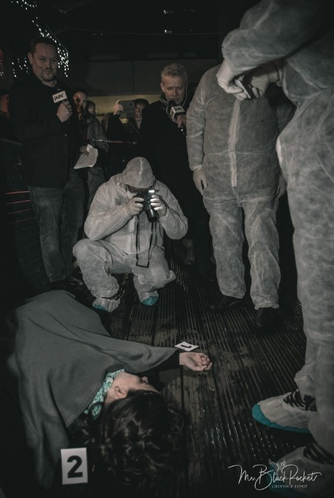
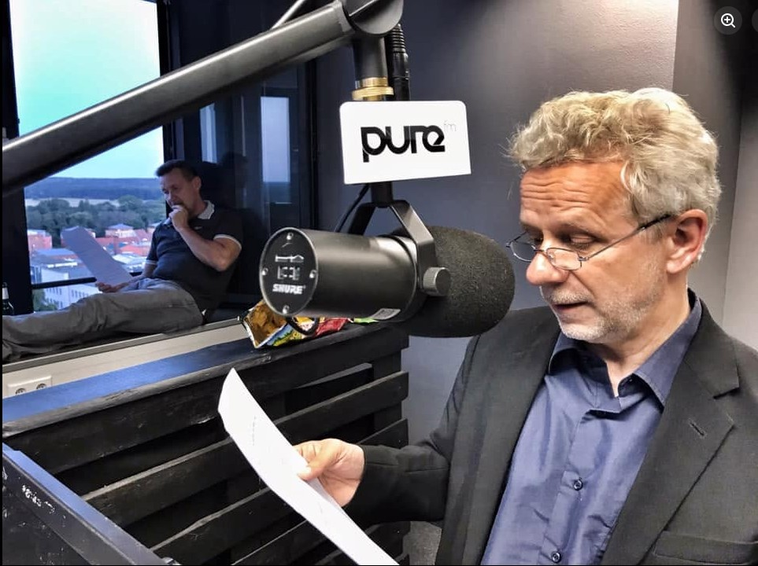
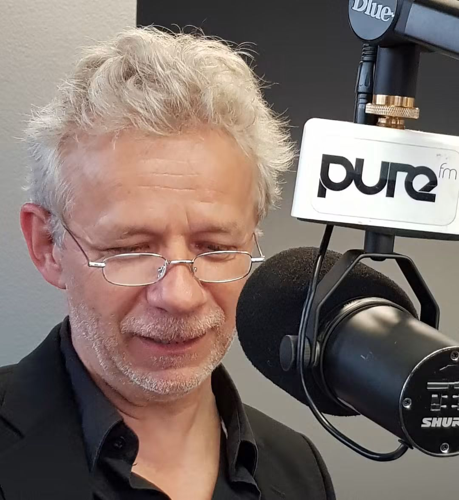
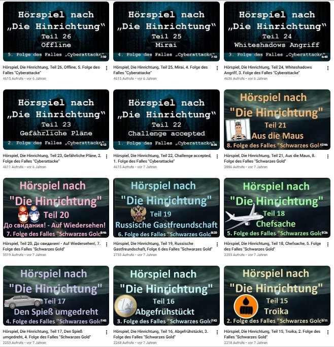

Hörspiele
Radiokrimi – authentische Kriminalfälle
Gemeinsam mit Silvia Walter schrieb Bernd Hesse die Drehbücher für eine Radiokrimi-Reihe nach authentischen Kriminalfällen. Der Sender kündigte die neue Reihe zunächst in seinem Programm an.
Der Beginn einer Radiokrimi-Reihe
Mit der Ankündigung des Radiokrimis begann eine Reihe, in der authentische Kriminalfälle für das Medium Hörspiel bearbeitet wurden.

Eine Kriminacht zum Auftakt
Zum Auftakt der neuen Spielreihe initiierte der Sender eine Kriminacht. Die Veranstaltung wurde öffentlich angekündigt und stieß auf großes Interesse.


Die Kriminacht
Die Kriminacht fand vor zahlreichen Zuschauern statt und dokumentierte das große öffentliche Interesse an dem neuen Format.



Vom Drehbuch zum Hörspiel
Aus dem Auftakt entwickelte sich eine umfangreiche Hörspielreihe. Bernd Hesse und Silvia Walter schrieben die weiteren Folgen gemeinsam. Bei den Aufnahmen übernahmen beide auch Rollen im Hörspiel.
Die hier gezeigten Aufnahmen entstanden während der Sprachaufnahmen mit Bernd Hesse.


27 Folgen
Insgesamt entstanden 27 Folgen der Radiokrimi-Reihe. Sie sind auch heute noch auf dem YouTube-Kanal des Schriftstellers zu finden.
